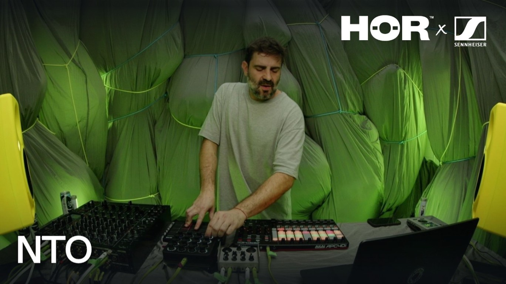

Latest uploads
All 23 by dateMarshGjipe Beach27 Aug 2025 · 2:10:57CamelPhatYacht session, Ibiza3 Oct 2025 · 1:48:52Indira PaganottoMonegros Desert Festival, Fraga13 Nov 2025 · 2:03:20NTOkomm schon Alter Festival19 Jun 2026 · 1:20:18NTOSpectra Festival, Liège30 Sep 2026 · 2:03:36

NTOHÖR x Sennheiser Livingroom, Amsterdam21 Oct 2026 · 0:56:46 · 11,038 views Play setFree full-length DJ sets, filed like a record collection.
23 sets, 9 artists, 32 h 09 of music. Pick one and it plays right here. When it ends, the next one starts by itself.
Special location8 sets · 12 h 44Festival6 sets · 10 h 56Club3 sets · 4 h 08Studio / Session4 sets · 2 h 55Livestream2 sets · 1 h 27
1 Paul KalkbrennerPM Open Air, Buenos Aires
Paul KalkbrennerPM Open Air, Buenos Aires
Festival · 2:26:0414,340,113 views2NTOTour Saint-Jacques, Paris4.4M3Val BakerBedroom session, Bangkok3.7M4FolamourCathédrale Saint-Pierre, Geneva3.2M5The BlazeCercle Odyssey, Mexico City2.4M6Paul KalkbrennerSónar Lisboa, Lisbon2.0M7NTORégion Dents du Midi, Valais1.8M8NTOBuiten Westen, The Hague1.1M9MarshGjipe Beach742K10NTO & Joachim PastorConcorde, Paris709K11CamelPhatYacht session, Ibiza510K12NTO6MIC, Aix-en-Provence446K
Paul KalkbrennerPM Open Air, Buenos AiresFestival · 2:26:0414,340,113 views2NTOTour Saint-Jacques, Paris4.4M3Val BakerBedroom session, Bangkok3.7M4FolamourCathédrale Saint-Pierre, Geneva3.2M5The BlazeCercle Odyssey, Mexico City2.4M6Paul KalkbrennerSónar Lisboa, Lisbon2.0M7NTORégion Dents du Midi, Valais1.8M8NTOBuiten Westen, The Hague1.1M9MarshGjipe Beach742K10NTO & Joachim PastorConcorde, Paris709K11CamelPhatYacht session, Ibiza510K12NTO6MIC, Aix-en-Provence446K
Thicker spine, more views.Special locationFestivalClubStudio / SessionLivestream
Partner placement · exampleSee NTO liveFestival name, city, dates. Sold per artist, counted per click.Tickets
File under
Flip to a genre, or go straight to an artist.
Genres
Live Act16 sets · 21 h 00 · NTO, The Blaze, Paul KalkbrennerMelodic Techno14 sets · 15 h 45 · NTOTechno4 sets · 8 h 33 · Paul Kalkbrenner, Eric Prydz, Indira PaganottoHouse2 sets · 2 h 21 · Folamour, Val BakerMelodic House2 sets · 4 h 00 · CamelPhat, MarshDeep House1 set · 28 min · Val BakerDisco1 set · 1 h 54 · FolamourElectronica1 set · 1 h 30 · The BlazeNeo-Classical1 set · 41 min · NTOProgressive1 set · 2 h 11 · MarshProgressive House1 set · 2 h 05 · Eric PrydzPsytrance1 set · 2 h 03 · Indira PaganottoTech House1 set · 1 h 49 · CamelPhatAdvertisement · 970 × 250